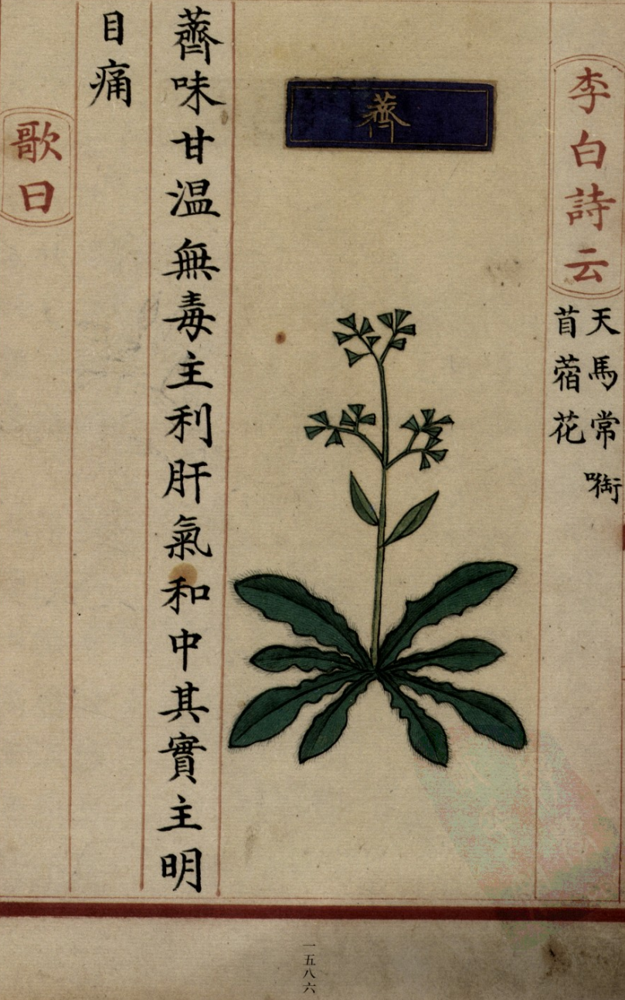

出现篇目
别名 穄、粢
古代记载
《诗集传》
稷、亦谷也。 一名穄。 似黍而小。 或曰、粟也。
《本草纲目》
"普曰∶荠生野中。 弘景曰∶荠类甚多，此是今人所食者。叶作菹、羹亦佳。《诗》云∶谁谓荼苦，其甘如荠，是也。 时珍曰∶荠有大、小数种。小荠叶花茎扁，味美。其最细小者，名沙荠也。大荠科、叶皆大，而味不及。其茎硬有毛者，名菥蓂，味不甚佳。并以冬至后生苗，二、三月起茎五、六寸。开细白花，整整如一。结荚如小萍，而有三角。荚内细子，如葶苈子。其子名蒫，四月收之。 师旷云∶岁欲甘，甘草先生，荠是也。菥蓂、葶苈皆是荠类。葶苈见草部隰草类。"
当代记载 《中国植物志》
荠 （Capsella bursa-pastoris），十字花科，荠属植物。一年或二年生草本，高 (7-) 10-50厘米，无毛、有单毛或分叉毛；茎直立，单一或从下部分枝。花果期4-6月。分布几遍全国；全世界温带地区广布。野生，偶有栽培。生在山坡、田边及路旁。

<补遗雷公炮制便览>